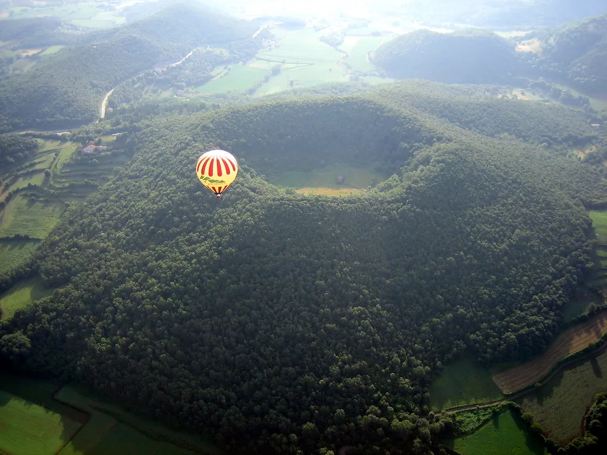
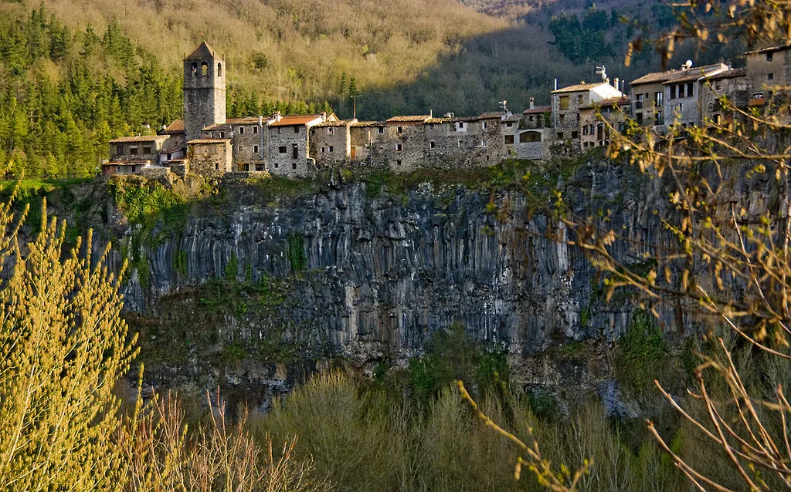
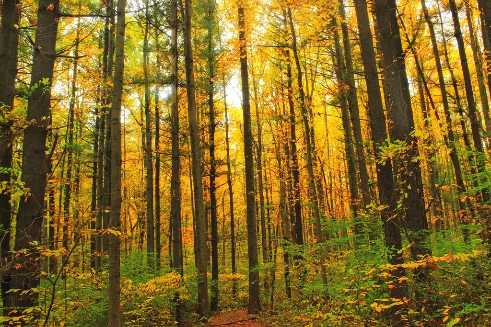
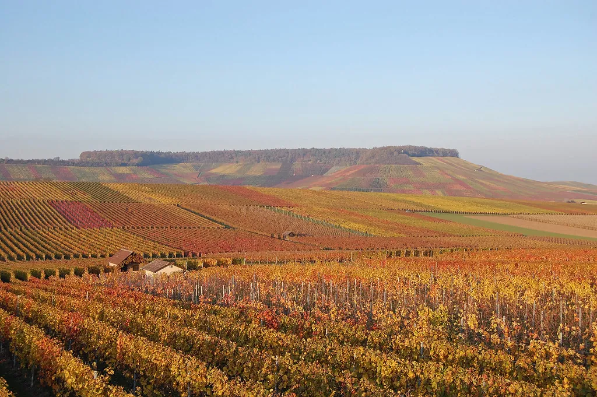
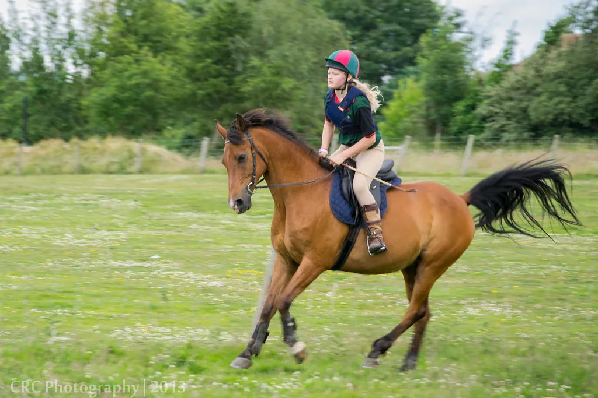
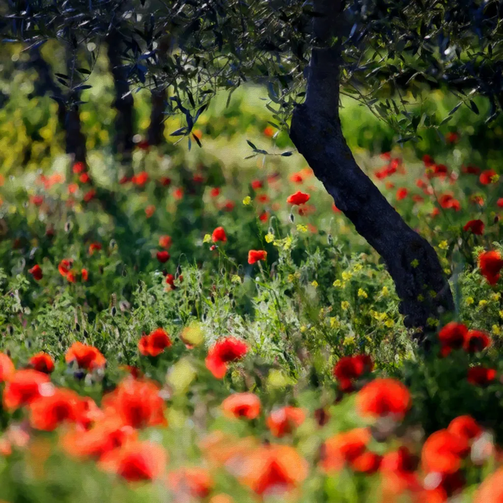
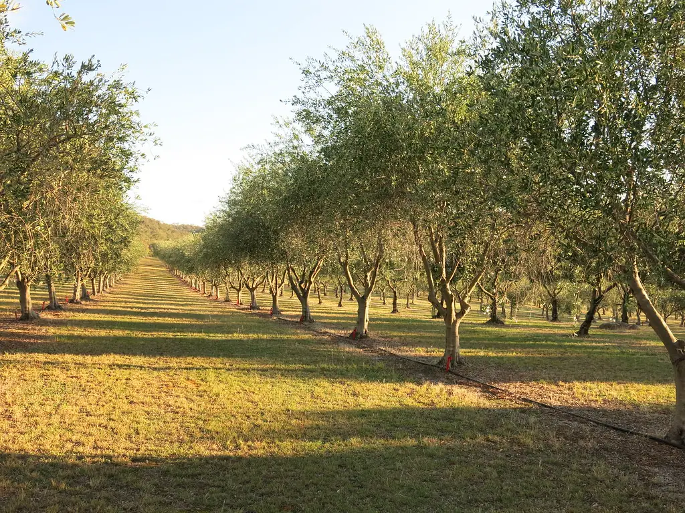
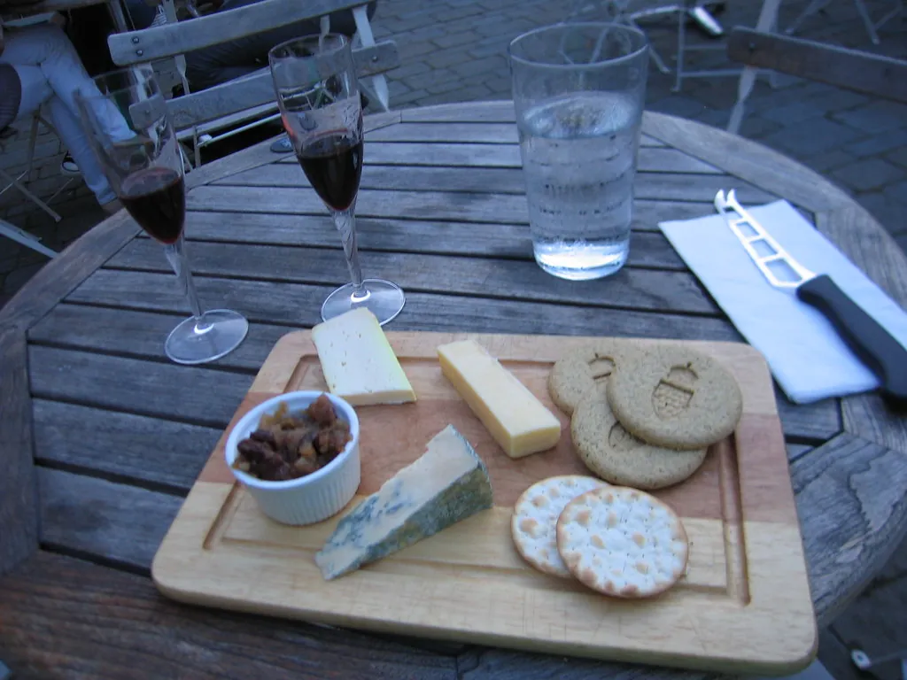

Vuelo en globo sobre los volcanes
Sobrevuela los más de cuarenta volcanes de la Garrotxa. Termina con un almuerzo de payés en el prado. Lo reservamos por ti.

Parque Natural de la Zona Volcánica
Vivimos aquí todo el año y conocemos cada camino. Estas son las experiencias que más recomendamos; podemos reservarlas por ti antes de que llegues.

Sobrevuela los más de cuarenta volcanes de la Garrotxa. Termina con un almuerzo de payés en el prado. Lo reservamos por ti.

Un bosque de hayas que crece sobre la lava de un volcán. En otoño se vuelve dorado. Te damos el mapa y un termo de café.
Un pueblo al borde de un acantilado de basalto y una villa medieval con su puente románico. Perfecto para una mañana tranquila.

Tres bodegas familiares que conocemos bien. Te organizamos la visita y la comida en un restaurante de la zona.

Paseos por caminos de payés con un centro ecuestre vecino. Hay ponis para los más pequeños.

Recoge los huevos del gallinero y las verduras de tu cena con Marta, que lleva el huerto desde hace diez años.
Cómo llegar

